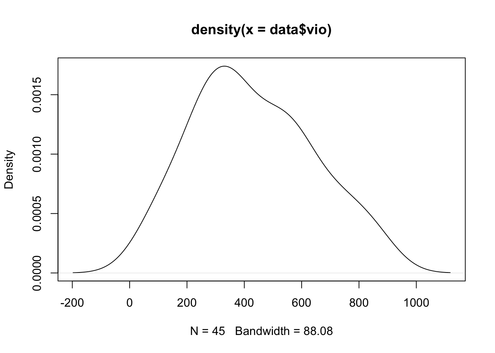
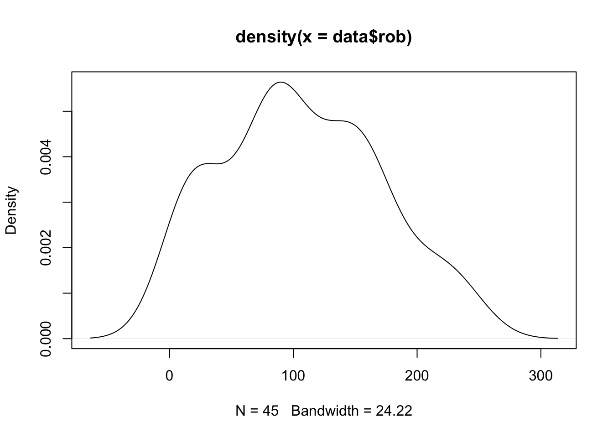
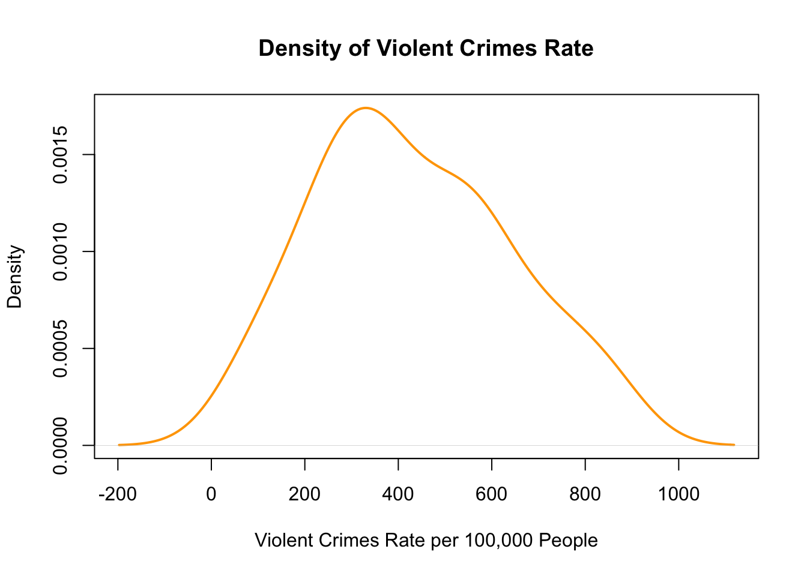
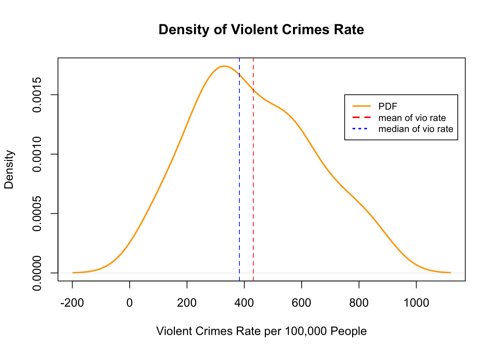
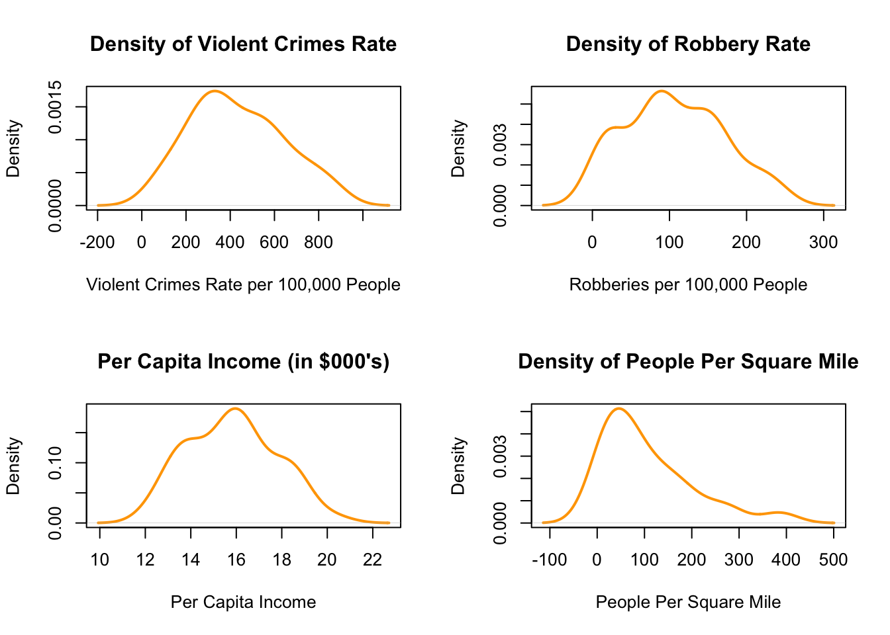
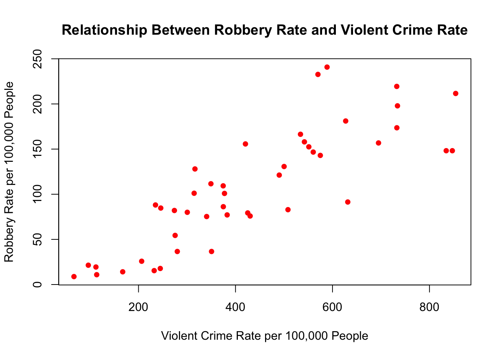
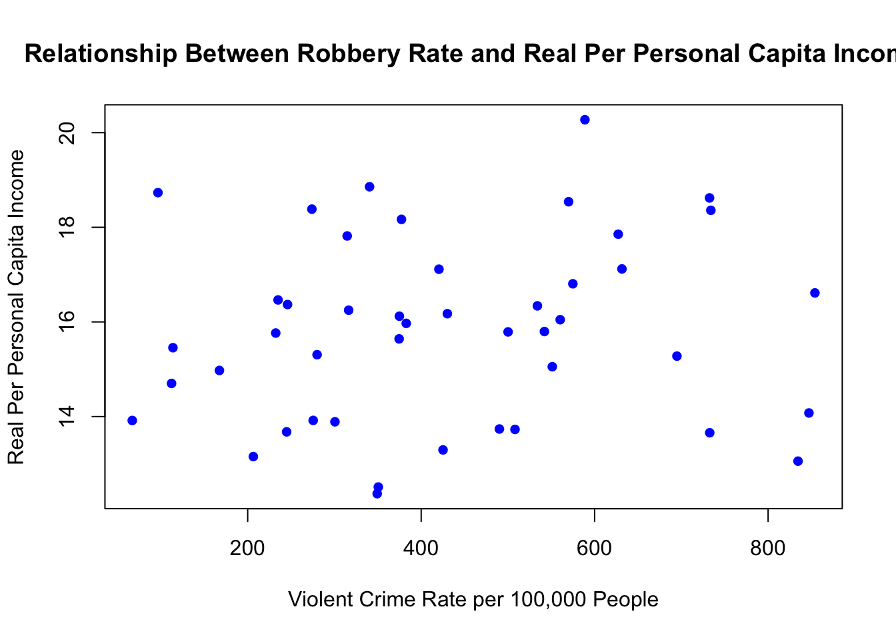
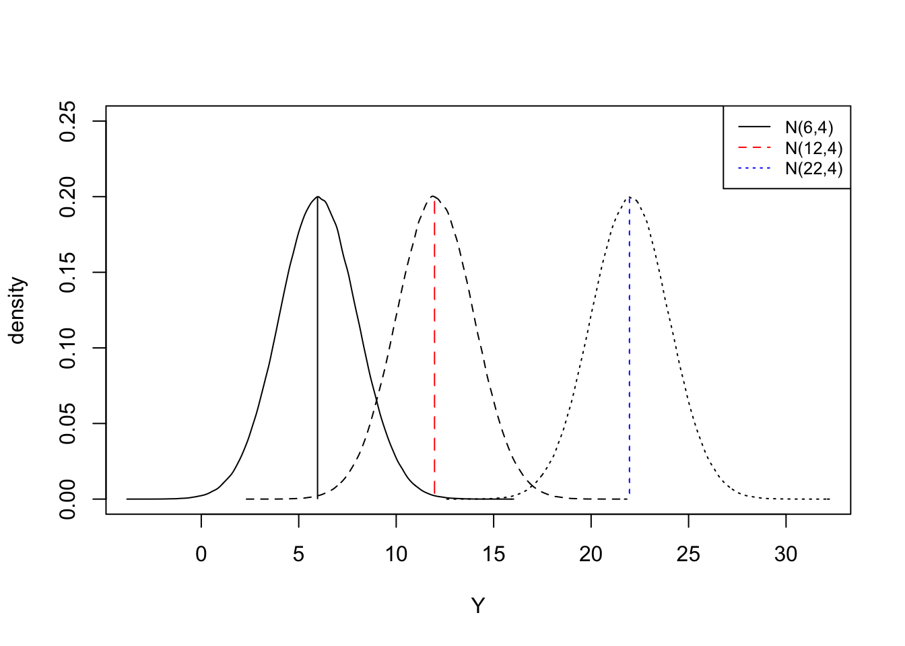

ECOM20001 Semester 1 2025 Tutorial 2 Visualising and Describing Data in R
Objectives
After completing this tutorial you should be comfortable with
Using R to summarise and interpret data
Creating density plots in R and interpreting these plots
Creating and interpreting scatter plots in R
You should also have revisited
marginal, joint and conditional distributions
linear transformations of probability distributions
using Summation and Expectation operators
Tip
To view the relevant R chunks used to produce the output to answer tutorial questions below click on \(\blacktriangleright\) Code in the body text, or \(\blacktriangleright\) TRUE in the margin text.
Part 1: Visualising and Describing Data in R
Part A Getting Started
Tutorial 1 provides details on how to set up the preferred directory structure.
Please create a Tutorial2 folder on your computer, and then go to the LMS site for ECOM 20001 and download the following files into the Tutorial2 folder:
tute2.R
tute2_crime.csv
The first file is the R code for tutorial 2, the second file is the .csv file that contains the dataset for the tutorial1. The dataset has the following 5 variables:
stateid: identifier for a US state
vio: violent crime rate — incidents per 100,000 people
rob: robbery rate — incidents per 100,000 people
dens: population per square mile of land
avginc: real per capita personal income in the state
With the R file and data downloaded into your Tutorial2 folder, you are ready to proceed with the tutorial.
Please go to the tute2.R file to continue with the next 2 sections of the tutorial, which are Visualising Data and Descriptive Statistics.
The first thing to do is set the Working Directory and then load the CSV file into a dataframe:
Code
## Set the working directory for the tutorial file#setwd("/Users/byrned/Dropbox/Teaching/20001/Tutorials/Tutorial2")#..........................#Note I have not used the line above - use the top menu bar option#..........................## Load the dataset from a comma separate valuedata=read.csv(file="tute2_crime.csv")# Load the required pacakge(s)library(stargazer)
Before using the library(stargazer) command make sure that the package stargazer is installed (we went through ways to install packages in Tutorial 1).
Part B
Having worked through the tute2.R code and graphs, please answer the following:
Question B1
Discuss the sample means, standard deviations, min and max for each of the four main variables in the dataset: vio, rob, density, avginc.
What does a “typical” state look like in the dataset?
Focus on sample means in describing a typical state. Be sure to state the units of a variable to accurately describe what a typical state looks like.
Solution
Code
## You can also quickly get summary statistics using the summary() and sapply() commands togethersummary(data) # Mean, Min, Max, Median, 25th percentile, 75th percentile
stateid vio rob dens avginc
Min. : 1 Min. : 66.9 Min. : 8.8 Min. : 1.086 Min. :12.37
1st Qu.:12 1st Qu.:275.5 1st Qu.: 75.3 1st Qu.: 34.542 1st Qu.:13.92
Median :23 Median :382.8 Median :100.9 Median : 76.529 Median :15.80
Mean :23 Mean :431.5 Mean :106.7 Mean :105.656 Mean :15.82
3rd Qu.:34 3rd Qu.:570.0 3rd Qu.:152.5 3rd Qu.:157.042 3rd Qu.:17.11
Max. :45 Max. :854.0 Max. :240.8 Max. :385.441 Max. :20.27
Code
sapply(data,sd) # Standard Deviation
stateid vio rob dens avginc
13.13393 209.54125 64.19275 97.66395 1.93695
However stargazer provides a nicer, more readable table of descriptive statistics:
Code
stargazer(data, summary.stat =c("n", "mean", "sd", "median", "min", "max"), type="text", title="Descriptive Statistics for the Crime data set")
Descriptive Statistics for the Crime data set
====================================================
Statistic N Mean St. Dev. Median Min Max
----------------------------------------------------
stateid 45 23.000 13.134 23 1 45
vio 45 431.484 209.541 382.800 66.900 854.000
rob 45 106.656 64.193 100.900 8.800 240.800
dens 45 105.656 97.664 76.530 1.086 385.441
avginc 45 15.816 1.937 15.797 12.370 20.273
----------------------------------------------------
Next we have to interpret the results (recall the question provided a hint to concentrate on the sample means and use the units provided for each variable).
So we see a typical state has: 431 violent crimes per 100,000 people, 107 robberies per 100,000 people, an urban density of 106 people per square mile, and an average annual per-capita income of $15,820 per year.
Discuss how the min and max of each variable, highlighting the range of values that each variable takes on.
Just how varied is the degree of violent crimes and robbery rates, and population densities and per capita incomes in the sample?
How violent and robbery-filled is the worst state compared to the best state?
Solution
The range of robbery and violence rates is remarkable.
Some states have only 67 violent crimes per 100,000 people per year, while others have up to 854 (!) violent crimes per 100,000 people per year.
Its more than 10 times the difference between the least and most violent crime rates across states.
Similarly, the robbery rate is as small as 9 robberies per 100,000 people year and goes up to 240 (!) per 100,000 people per year.
We also have some very rural (1 person per square mile) and urban (385 people per square mile) states.
And per capital income similarly ranges from $12,370 to $20,270.
Question B2
How do the respective probability densities of vio, rob, density, avginc look?
Focus on their mean, standard deviation, and skewness
Solution
Code
## Compute probability density for vio and rob variableplot(density(data$vio)) plot(density(data$rob))


These do not look very appealing at all!
No title nor axes labels.
In fact, if you used these in an assignment you would lose marks
So use these code chunks in the R code provided
Code
## Graph histogram of vio, more nicely doneplot(density(data$vio),main="Density of Violent Crimes Rate",xlab="Violent Crimes Rate per 100,000 People",ylab="Density",col="orange",lwd=2)

Code
# note in this plot the line thickness increases# by using the lwd option - 2 is thicker, 3 is thicker again etc.,
You do need to use code such as the above in your assignments if you are asked to produce a density plot.
Note
The following is just provided for interest; there is no need to include this in your assignment.
So say, we wanted to include the mean and median for the variable vio in the density plot; we could use
Code
plot(density(data$vio),main="Density of Violent Crimes Rate",xlab="Violent Crimes Rate per 100,000 People",ylab="Density",col="orange",lwd=2) #### The following is optional you do NOT need to include#### these lines in your assignment code# to put in the mean add (as a dashed line) useabline(v=mean(data$vio),col="red", lty=2)# to put in the median add (as a dashed line e.g. lty=2)abline(v=median(data$vio),col="blue",lty=2)# and add a legend legend(750, 0.0015, legend=c("PDF", "mean of vio rate", "median of vio rate"),col=c("orange", "red", "blue"), lty=1:3, cex=0.8,lwd=2)

putting together density plots for the variables vio, rob, dens and avginc we have
TRUE
# code used to generate the density plots# displayed togetherpar(mfrow=c(2,2))plot(density(data$vio),main="Density of Violent Crimes Rate",xlab="Violent Crimes Rate per 100,000 People",ylab="Density",col="orange",lwd=2) plot(density(data$rob),main="Density of Robbery Rate",xlab="Robberies per 100,000 People",ylab="Density",col="orange",lwd=2)plot(density(data$avginc),main="Per Capita Income (in $000's)",xlab="Per Capita Income",ylab="Density",col="orange",lwd=2)plot(density(data$dens),main="Density of People Per Square Mile",xlab="People Per Square Mile",ylab="Density",col="orange", lwd=2)

The urban density variable is right skewed, which means there are many similarly-dense US states, but a few in the right tail of the distribution that are very dense such as New York and California.
The other distributions are relatively symmetric around their means.
Question B3
Comment on the 3 scatter plots listed below; these should be saved in your working directory for tutorial 2.
Important
The required chunks from the R code you were given is below. Note that these are PDF documents; the way to get these is to insert pdf() and (insert a file name and extension) before the plot commands which tells R to print to the file and dev.off() after the plot commands to tell R to stop writing the output to the file you named.
Code
# Robbery and Violent Crime Ratepdf("fig_nice_scatter_rob_vio.pdf")plot(data$vio,data$rob, main="Relationship Between Robbery Rate and Violent Crime Rate",xlab="Violent Crime Rate per 100,000 People",ylab="Robbery Rate per 100,000 People",col="blue",pch=16)dev.off() # Robbery and Per Capita Incomepdf("fig_nice_scatter_rob_vio.pdf")plot(data$vio,data$avginc, main="Relationship Between Robbery Rate and Real Per Personal Capita Income",xlab="Violent Crime Rate per 100,000 People",ylab="Real Per Personal Capita Income",col="blue",pch=16)dev.off()# Violent Crime Rate and Population Densitypdf("fig_nice_scatter_avginc_vio.pdf")plot(data$avginc,data$rob, main="Relationship Between Robbery Rate and Per Capita Income",xlab="Per Capita Income",ylab="Robery Rate per 100,000 People",col="black",pch=16)dev.off()
Economic explanations focus on the costs and benefits of a particular behaviour for explaining empirical patterns.
Visually, does a relationship appear exist in each graph?
If so, offer an economic explanation for why the relationship might exist.
There may be multiple explanations, so you may offer various explanations if you wish. But just one explanation is fine.
Solution
The scatter plots you created should look like those below:


Perhaps not surprisingly, there is a strong positive correlation between the robbery and violent crime rate.
A natural interpretation is that similar types of people or demographics are likely to engage in robberies and violent crimes which can underlie the strong correlation.
The relationship between robberies and income is basically non-existent.
Economists commonly refer to a lack of correlation in a scatter plot like this as a cloud.
A cloud often results from economic explanations running into each other
Higher income could mean more benefit on average from robbery, so we should expect a positive relationship between robberies and per capita income
However, higher income states may have higher tax bases to pay for more effective police forces which makes the cost of robbery higher. This would create a negative relationship between robberies and per capita income. This collision of benefits and costs associated with higher income locations can cause a cloud correlation, like we see in the second panel above.
Finally, we see a positive relationship between robbery rates and urban density. As the footnote in the tutorial question alluded to, this could potentially reflect:
The cost of robbery being lower in more dense states as potential robbery targets are more plentiful in close proximity.
The benefit of robbery being higher if more dense locations attract more retail shops and merchants (called “agglomeration” benefits of urban density), which provides more opportunities and hence benefit for robbery.
More difficult for police to identify potential robbers in more crowded places, which again makes the expected costs of robbery lower since robbers are less likely to be caught
To be clear: all of these “explanations” are just hypotheses and none of them are proved from a simple scatter plot.
And there are potentially many other hypotheses. Later in ECOM20001, and throughout ECOM30002: Econometrics 2, we develop empirical approaches to unpack these various explanations for correlations found in scatter plots.
Part 2: Practice Problems
Note: Part 2 of this tutorial contains extra practice exercises and will potentially only be covered in your tutorial, depending on the time remaining after going through Part 1. You should work through the solutions below and use a consultation to follow up any remaining questions you may have on this material.
Conditional Distributions
Question 1
Suppose you have a random variable \(X\) that is i.i.d distributed from a \(N(\mu_X,1)\) distribution, and a separate random variable \(Y\) that is defined as follows: \(Y=2+2X\)
What is the distribution of \(Y\)?
Solution
The distribution of Y is N\(\left(2+2\mu_X,4\right)\).
How did we get this?
In general (using Expectation outlined in Lecture 2), if one i.i.d. random variable i.e. \(Y\) is a linear combination of another i.i.d. variable, \(X\) such that \(Y=a+bX\) then the mean of \(Y\) is \(\mu_Y=a+b\mu_X\) and the variance of \(Y\) is \(\sigma_Y^2 = b^2 \times\sigma_X^2\) . In this case, \(a=2\), \(b=2\) and \(\sigma_X^2=1\) e.g. \(\mu_Y = 2+2\mu_X\) and \(\sigma_Y^2 = 2^2 \times 1 = 4\)
Graphically plot the conditional distribution of \(Y\) if \(\mu_X=2,\mu_X=5\), and if \(\mu_X=10\). What is happening to the conditional distribution of \(Y\) for these different \(X\) values?
Solution
Plug in the values for \(\mu_X\) in the formula above e.g. for \(\mu_X=2\):
\[\mu_Y=2+2\times2=4\]
\(\sigma_Y^2\) remains the same giving.
For \(\mu_x=2 \Rightarrow\)\(Y \thicksim N(6,4)\)
If \(\mu_X\) =2, 5, or 10, then the distribution of \(Y\) is \(N(6,4)\), \(N(12,4)\), and \(N(22,4)\), respectively.
The following graph plots the distributions of \(Y\), conditional on the three \(\mu_X\) values.
Larger values of \(X\) shift the distribution of \(Y\) to the right.

Suppose Y was instead distributed as \[Y=2+4X\].
What is the distribution of \(Y\) now?
Again, graphically plot the conditional distribution of \(Y\) if \(\mu_X=2\) , if \(\mu_X=5\), and if \(\mu_X=10\) and compare your results to what you found in part b.
What can you conclude about the magnitude of how shifts in the conditional distribution of \(Y\) as a function of different \(X\) values as the magnitude of the slope in the linear function that defines \(Y\) increases?
Note: In answering this question, you may simply draw the conditional distributions of \(Y\) by hand, or you may use R to plot the different conditional distributions of \(Y\) given \(X\).
Solution
One way of reproducing the plots shown in the solutions in the Subject Home Page on Canvas in R is shown below in the margin notes- there are a lot of different ways to do this!.
You will not be asked to do this in assignments so you can skip the code below if you wish.
Code
# code used to generate density graphs on the one plotdistdat3 <-read.table(text ="info mean sdmu10 10 4mu22 22 4mu42 42 4", header =TRUE)densities1 <-apply(distdat3[, -1], 1, function(x) rnorm(n =1000000, mean = x[1], sd = x[2]))colnames(densities1) <-distdat3$infos3<-plot(0, type ="n", xlim =c(-10, 60), ylim =c(0, .15),ylab="density", xlab="Y")for (d in1:ncol(densities1)){lines(density(densities1[, d]), lty = d,col="black")}legend("topright", legend=c("N(10,16)", "N(22,16)" , "N(42,16)"),col=c("black", "red", "darkgreen"), lty=1:3, cex=0.8)clip(0,10,0,0.1)abline(v=10,col="black",lty=1,lwd=2)clip(0,22,0,0.1)abline(v=22, col="red", lty=2,lwd=2)clip(0,42,0,0.1)abline(v=42,col="darkgreen", lty=3,lwd=2)
The distribution of \(Y\) is now N(2+4\(\mu_X\),16).
If \(\mu_X\)=2, 5, or 10, then the distribution of \(Y\) is now N(10,16), N(22,16), and N(42,16).
There are two key changes in the results from part b. from changing the definition of \(Y\) to \(Y=2+4X\).
The variance of \(Y\) increases,
and the shifts in the mean in the distribution for different \(X\) values become larger in magnitude.
That is, the conditional mean of \(Y\) given X becomes more sensitive to changes in \(X\).
Question 2
Consider the following table which describes the joint probability distribution for all combinations of studying and performance. The outcome space for Studying (Y) and Performance (X) is:
Y - Studying: Study Hard, Study Sometimes, Study Never
X - Performance: High Grade , Medium Grade , Low Grade
High Grade
Medium Grade
Low Grade
Total
Study Hard
0.20
0.10
0.02
0.32
Sometimes
0.07
0.30
0.10
0.47
Never Study
0.01
0.05
0.15
0.21
Total
0.28
0.45
0.27
1.00
What is the marginal distribution for studying?
Solution
P(Study Hard)=0.32
P(Study Sometimes)=0.47
P(Study Never)=0.21
What is the marginal distribution for performance?
Solution
P(High Grade)=0.28
P(Medium Grade)=0.45
P(Low Grade)=0.27
What is the probability distribution of Performance, conditional on Studying hard?
Solution
P(High Grade | Studying Hard)=0.20/0.32=0.625
P(Medium Grade | Studying Hard)=0.10/0.32=0.3125
P(Low Grade | Studying Hard)=0.02/0.32=0.0625
What is the probability distribution of Performance, conditional on Studying Sometimes?
What is the probability distribution of Studying, conditional on Medium Grade?
Solution
P(Study Hard | Medium Grade)=0.10/0.45=0.2222
P(Study Sometimes | Medium Grade)=0.30/0.45=0.6666
P(Study Never | Medium Grade)=0.05/0.45=0.1111
What is the probability distribution of Studying, conditional on Low Grade?
Solution
P(Study Hard | Low Grade)=0.02/0.27=0.0741
P(Study Sometimes | Low Grade)=0.10/0.27=0.3704
P(Study Never | Low Grade)=0.15/0.27=0.5555
Using an example from the table above, show that Studying and Performance are not independently distributed
Solution
If, for example, Studying and Performance were independent, then the joint probability of P(Study Hard, High Grade) would equal the product of the marginal probabilities of Study Hard and High Grade:
P(Study Hard) x P(High Grade).
Computing this product we obtain \(0.32 \times 0.28 = 0.0896\) which is not equal to the joint probability of
P(Study Hard, High Grade) in the table of 0.20.
Therefore, Studying and Performance are not independent.
Part 2 Summation
Summation Practice Problems
Show the following equality is true \[\sum\limits_{i=1}^n\left(x_i-\bar{x} \right)=0\]
Show the following equality is true: \[n\bar{x} = \sum\limits_{i}^nx_i\]
Show the following equality is true \[\sum\limits_{i=1}^n \left(x_i-\bar{x} \right)^2=\sum\limits_{i=1}^nx_i^2-n\bar{x}^2\]
Show the following equality is true \[\sum\limits_{i=1}^n \left(xi-\bar{x} \right)\left(y_i-\bar{y} \right) = \sum\limits_{i=1}^n x_iy_i - n\bar{x}\bar{y}\]
the terms \(\bar{x}\sum y_i\) and \(\bar{y} \sum x_i\) in the 3\(^{\text{rd}}\) line could also be divided by \(\dfrac {n} {n}\) yielding the same result. For example:
for 3) and 4):
Expand the term inside the brackets
Run the \(\sum\) through term by term
Then use the relevant Expectation Rules and simplify
If \(a\) and \(b\) are constants and \(X\) and \(Y\) random variables then:
\(E(a)=a\)
the expectation of a constant is a constant eg. \(E(3)=3\)
\(E(aX)=a*E(X)\)
e.g. if \(a=2\) then \(E(X)\) doubles
\(E(a \pm X)= a \pm E(X)\)
e.g. if you add 3 to every case , the expectation will increase by 3
\(E(X+Y)= E(X)+E(Y)\)
the expectation of a sum = the sum of the expectations
\(E(XY) = E(X)*E(Y)\)
if \(X\) and \(Y\) are independent
\(COV(X,Y) = E[(X-E(X))*(Y-E(Y))]= E(XY)-E(X)E(Y)\)
if \(X\) and \(Y\) are independent then \(COV(X,Y)=0\)
\(V(a)=0\)
a constant does not vary e.g. \(V(7)=0\)
\(V(a \pm X)=V(X)\)
this follows from point 7. above
\(V(a \pm b X) = V(a)+b^2 V(X) = b^2 V(X)\)
a constant is squared when taken outside a variance operator (also use point 7.)
\(V(X \pm Y = V(x) + V(Y) \pm 2*COV(X,Y)\)
using point 6. if \(X\) and \(Y\) are independent then \(V(X \pm Y) = V(X) + V(Y)\)
Footnotes
The reference research article for these data is: Donohue, J. , Ayres, I. (2003) “Shooting Down the ‘More Guns Less Crime’ Hypothesis”, Stanford Law Review, 55, pp. 1193-1312↩︎